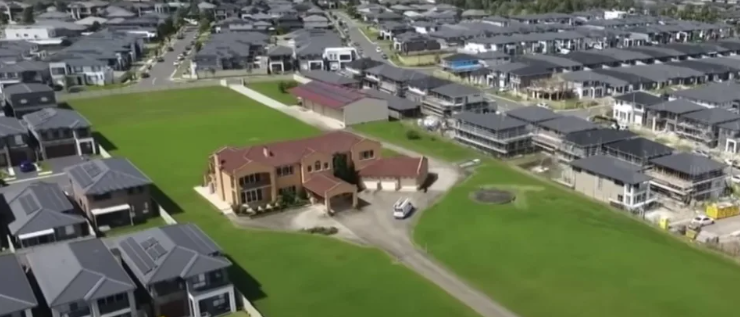
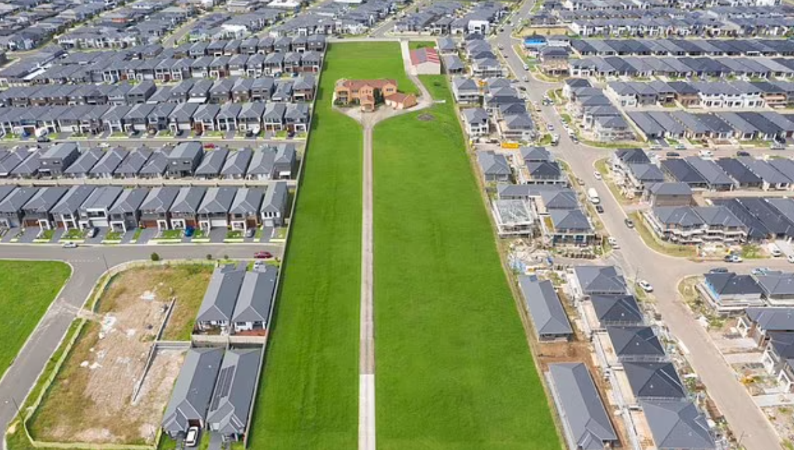
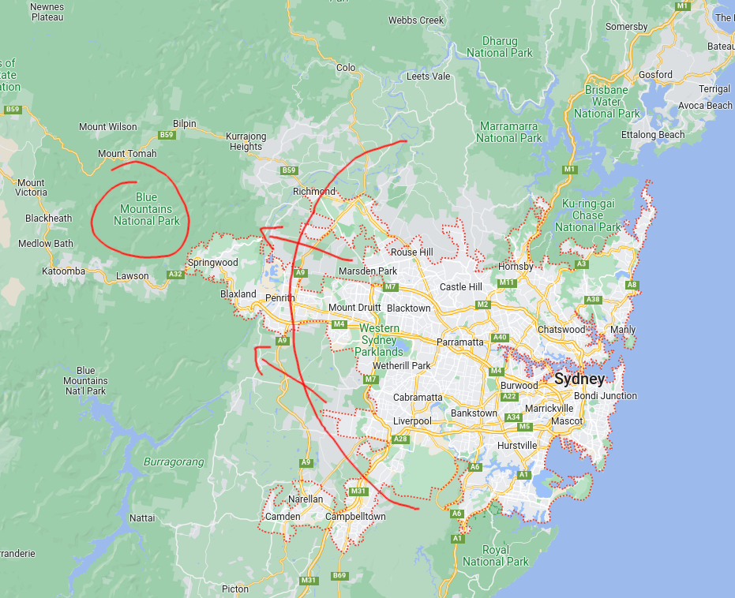
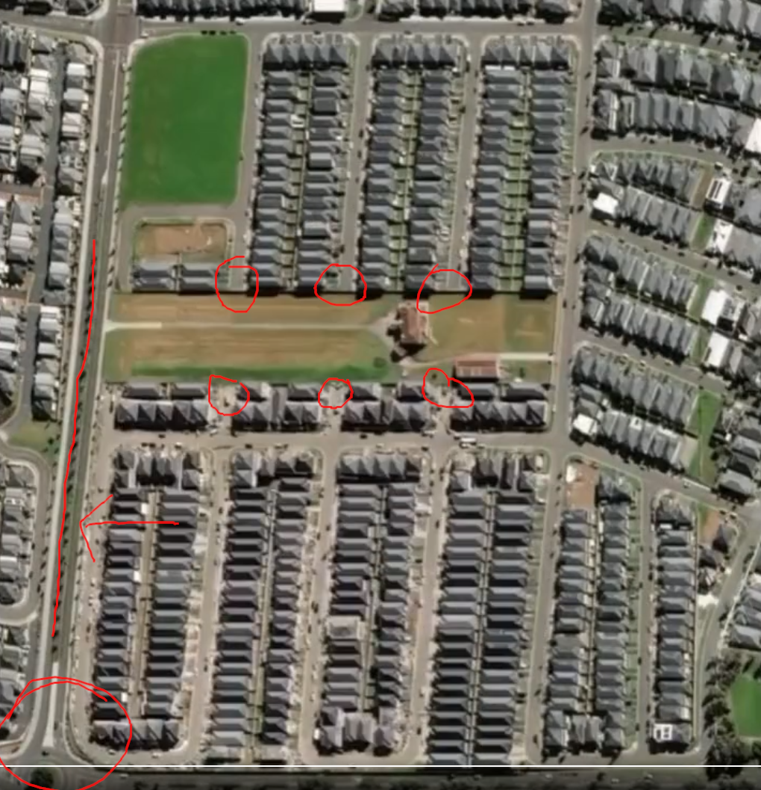
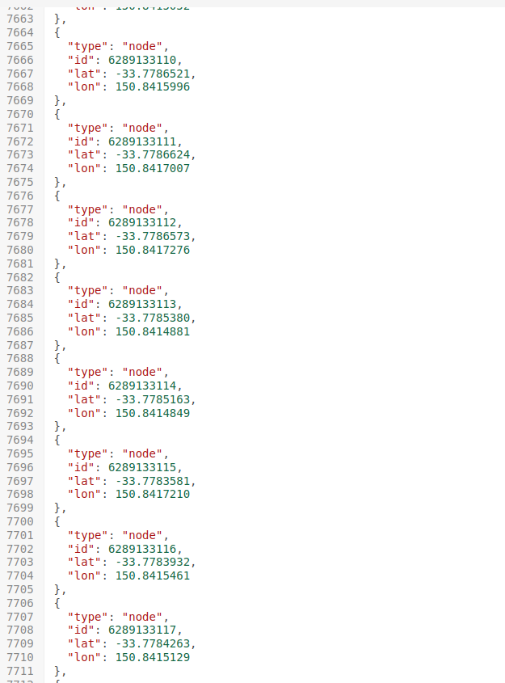
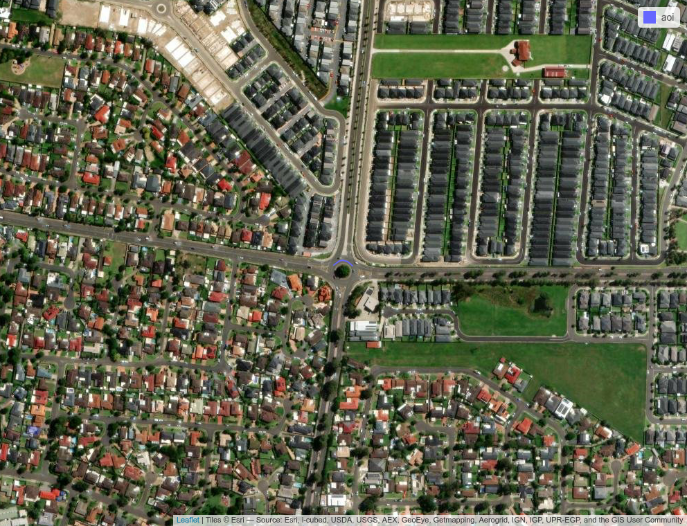
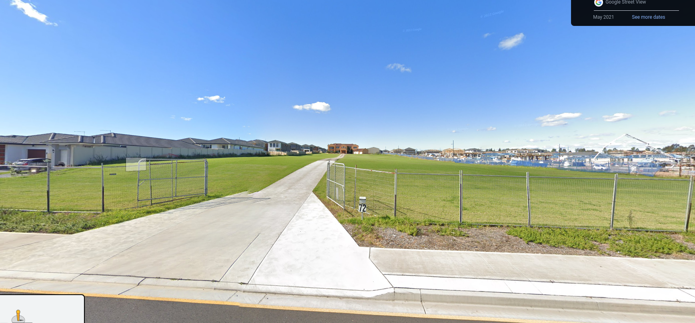

A defiant Aussie family has refused to sell their farm-land property despite the entire neighborhood being converted into a new housing estate.
Is this real? Where is it? Could I geolocate it using just OSINT1 techniques?… Yeah of course.
I have a loose theory that no matter who or where you are, there is probably sufficient data for a sufficiently motivated person to find you.


The Challenge
I saw this pop up on Twitter2 and other tabloid sites a while ago and thought it would be fun to try and geolocate it from the Twitter post alone.
A family in Australia has remained defiant in selling their nearly 5-acre property in the last few years as developers have been forced to build around them. Most recently, they declined a whopping $50 million offer for their home. Slap bang in the middle of a new-build… pic.twitter.com/pULUqpe1em
— Historic Vids (@historyinmemes) June 22, 2023
The main clue we get is:
About 40 minutes from Sydney’s central core, the property offers panoramic views of the Blue Mountains.
(Actually the tweet and some articles do mention the suburb, but let’s ignore that so we don’t spoil the fun)
The Method
- If the property is 40 minutes from Sydney and has views of the Blue Mountains, its likely to be somewhere West of the city.

- We can use the {osrm} package in R to construct drive time isochrones. This leverages the Open Source Routing Machine, based on Open Street Map data to calculate polygons that represent a given drive time from a set of coordinates. If we set this as 35-45 min drive time from the center of Sydney, we should get a ‘ring’ around Sydney containing the property location.
- By looking at the final frame we can see some distinguishing features in the image:
- There is a roundabout nearby
- There is a ‘Secondary Road’ (not a primary or trunk road, but more significant than roads found in villages etc)
- There are several ‘dead-end’ roads. Defined as cul-de-sacs that are not turning-circle roundabouts, but have no other exit point.

We can now construct a query to the OpenStreetMap Overpass API which stores features about the metadata of the street network. Let’s look for roundabouts on secondary roads within 500m of a no-exit road.
[out:json];
(
way[junction=roundabout][highway=secondary]
({{bbox}});
) -> .roundabout;
(
node[noexit=yes]
({{bbox}});
) -> .culdesac;
(
way.roundabout(around.culdesac:500);
);
out body;
>;
out skel qt;- The above query was run over all of Sydney, and exported as a
geojsonfile, which I then intersected with our drive-time ring above.

- This creates a shortlist of 101 candidate roundabouts. We now need to manually inspect each one to match it to the tweet. As these are unsorted, the average search time to find our roundabout of interest will be \(n/2\) which means I have have to manually check 50 images on average. To streamline this, I wrote a function to loop through all the candidate roundabouts, and automatically export a satellite image at roughly the level of zoom that would help me identify the right frame.
Found it!
And found it. Don’t think I need to share the exact address, not that it’s a secret or anything.
 